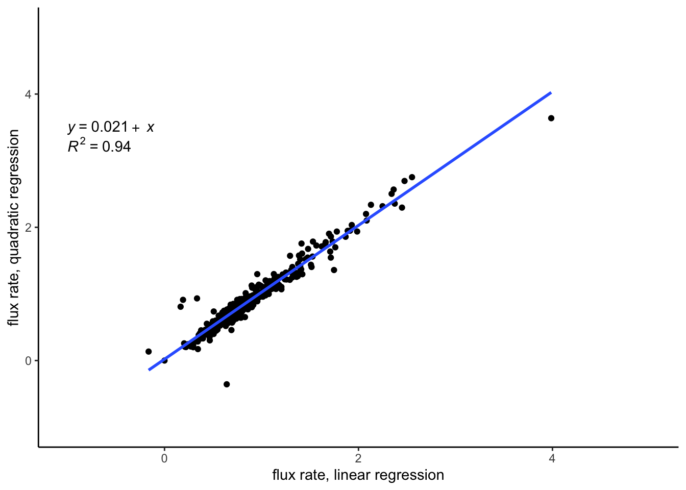

── Attaching core tidyverse packages ──────────────────────── tidyverse 2.0.0 ──
✔ dplyr 1.1.2 ✔ readr 2.1.4
✔ forcats 1.0.0 ✔ stringr 1.5.0
✔ ggplot2 3.4.2 ✔ tibble 3.2.1
✔ lubridate 1.9.2 ✔ tidyr 1.3.0
✔ purrr 1.0.1
── Conflicts ────────────────────────────────────────── tidyverse_conflicts() ──
✖ dplyr::filter() masks stats::filter()
✖ dplyr::lag() masks stats::lag()
ℹ Use the conflicted package (<http://conflicted.r-lib.org/>) to force all conflicts to become errors
here() starts at /Users/elizabethforbes/Documents/postdoc project documents/fieldwork_postdoc/summer 2023/data
Attaching package: 'hms'
The following object is masked from 'package:lubridate':
hmsEGM5 data: cleaning, organizing
EGM5: soil carbon flux data, collected manually in 2023
The data here were taken with a manual, hand-held chamber in summer 2023 by Elizabeth Forbes, at collars installed in Terra Nova and Gros Morne national parks in Newfoundland Canada. The data are of soil carbon flux rates, or the emission rates of carbon dioxide from the soil to the atmosphere (via soil microbial and root respiration, as well as physical processes that release gases). The raw data are reported in csvs and the final flux rates must be extracted, associated with relevant meta-data (e.g. location, date, time), and collated.
Upload data:
Upload data from the EGM5 folder in this project’s working directory.
# define colnames based on EGM5 manual:
colnames <- c("mtype", "date", "time", "plot_no", "rec_no", "co2_ref", "pressure", "flow", "h20_ref",
"rh_T", "O2_ref", "errorcode", "aux", "PAR", "soil_T", "air_T", "soil_mois",
"process", "dC", "dTime", "r_linear", "r_quadratic")
# units: flux estimates are in g/m2/hr, dC and co2_ref are in ppm, all temps in C, RH in %, pressure is in millibars
# read all files in folder with a .txt extension, using the "here" functionality to go one folder down:
filedir <- here::here("EGM5")
# list files in the folder, assign to list named "files":
files <- filedir %>% list.files()
# read files into list of tables:
df <- list.files(path = filedir, pattern = "*.TXT",
full.names = T) %>%
map_df(~read.table(., sep = ",", header = F, col.names = colnames, fill = T))Clean data
Extract the final fluxes (linear and quadratic) as well as the meta-data included in the EGM data output (things like soil temp, ambient temp, humidity, etc.).
# extract only those rows where "mtype" = R5 (aka the last observation per interval)
nl_flux <- df %>%
filter(mtype == "R5")Date and time
The date on the EGM5 was off while data was being collected; I have determined that date was set for one day previous than reality, and that time was set correctly to Newfoundland time. (I do need to double check this with field notes, however, as I examined the date/time discrepancy back in New England where time is 90mins behind Newfoundland local time.)
class(nl_flux$date) #character[1] "character"class(nl_flux$time) #character[1] "character"nl_flux$date <- as.Date(nl_flux$date, "%d/%m/%y")+1 #add one day to the date
nl_flux$time <- as_hms(nl_flux$time) # convert from character to time
nl_flux$datetime <- as.POSIXct(paste(nl_flux$date, nl_flux$time), format = "%Y-%m-%d %H:%M:%S") # create datetime objAdd meta-data
Associate relevant meta-data with the flux data: park ID, disturbance type (insect, fire, timber, exclosure, or mature), collar number. This requires matching the date/time and plot_no from each row to the notes from the field (digitized on Google drive).
Visualize data:
Warning: The dot-dot notation (`..eq.label..`) was deprecated in ggplot2 3.4.0.
ℹ Please use `after_stat(eq.label)` instead.`geom_smooth()` using formula = 'y ~ x'Warning: Removed 1 rows containing non-finite values (`stat_smooth()`).Warning: Removed 1 rows containing non-finite values (`stat_regline_equation()`).
Removed 1 rows containing non-finite values (`stat_regline_equation()`).Warning: Removed 1 rows containing missing values (`geom_point()`).